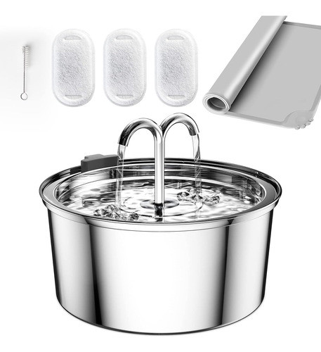
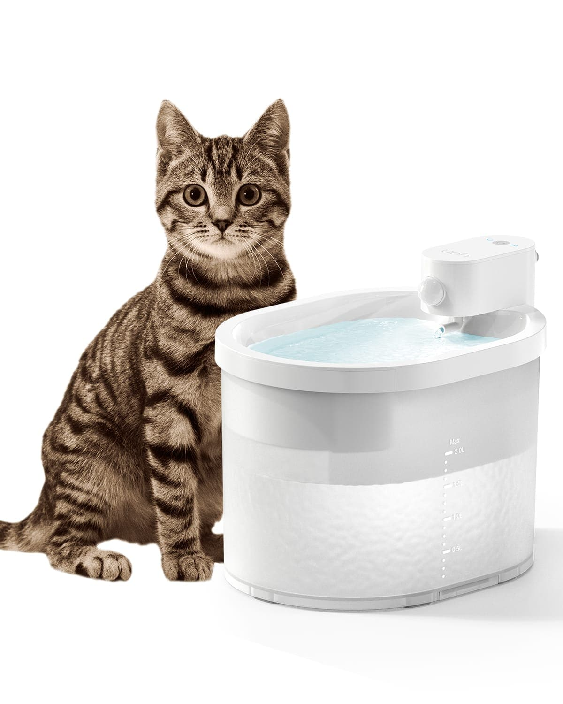
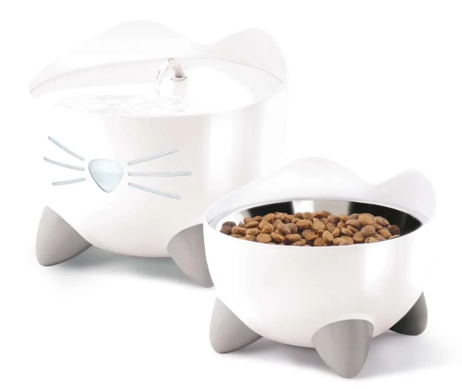

Comparativa rápida — los 3 modelos
| Modelo | Material | Ruido | Filtración | Precio aprox. | Ideal para |
|---|---|---|---|---|---|
| ⭐ Recomendada HoneyGuaridan 3.2L |
✓ Acero inox. | ✓ <20dB | ✓ Doble filtro | 35–45€ | La mayoría |
| ⚡ Tecnológica Uahpet Inalámbrica |
Plástico BPA-free | ✓ Silenciosa | ✓ Carbón activo | 50–60€ | Sin enchufes cerca |
| 💰 Presupuesto Catit Pixi 2.5L |
Plástico BPA-free | Normal | ✓ Filtro básico | 25–30€ | Primera fuente |

- Acero quirúrgico — sin bacterias ni microplásticos
- Menos de 20dB — inaudible de noche
- Doble filtración: carbón activo + resina anticalar
- Apto lavavajillas — limpieza perfecta

- Sensor PIR — solo fluye cuando el gato se acerca
- Batería recargable — dura meses sin enchufar
- Sin cables — colócala donde quieras
- Ahorro de agua por activación inteligente

- LED rojo de aviso cuando le falta agua
- Diseño con forma de gato — muy visual
- Filtros baratos y fáciles de encontrar
- Perfecta como primera fuente
¿Por qué acero y no plástico?
Esta es la pregunta que más nos hacen. La respuesta corta: el plástico envejece mal, especialmente en verano. Te lo explicamos:
- Poroso — acumula biofilm bacteriano invisible
- Con el calor suelta microplásticos en el agua
- Causa acné felino — puntos negros en la barbilla
- Se raya con el uso y los arañazos acumulan más bacterias
- No apto lavavajillas — difícil de limpiar a fondo
- No poroso — las bacterias no se adhieren
- No suelta nada al agua — seguro con el calor
- Elimina el acné felino en pocas semanas
- Mantiene el agua más fría — clave en verano
- Lavavajillas — limpieza total garantizada
"Si tu gato tiene puntos negros en la barbilla, cambia ya el bebedero de plástico por acero. En el 80% de los casos, el acné felino desaparece en 2-3 semanas solo con ese cambio. Es el consejo más barato que te dará cualquier veterinario."
El Factor Ruido — Decibelios
Nadie quiere una fuente que suene como una cafetera en el salón a las 3 de la madrugada. Estos son los niveles de ruido de cada modelo:
Referencia: conversación normal = 60dB · susurro = 30dB · umbral de sueño = 25dB
La inversión más rentable del verano
La obstrucción urinaria es la urgencia veterinaria más común en gatos en verano. Beber más agua — gracias a una fuente en movimiento — es la mejor prevención que existe. No es un capricho. Es medicina preventiva.
Fuente recomendada vs coste medio de urgencia veterinaria por obstrucción